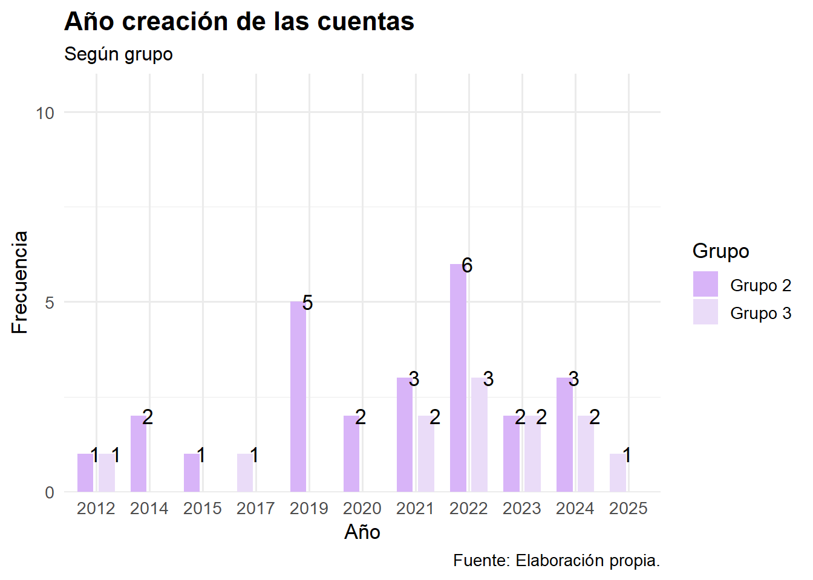
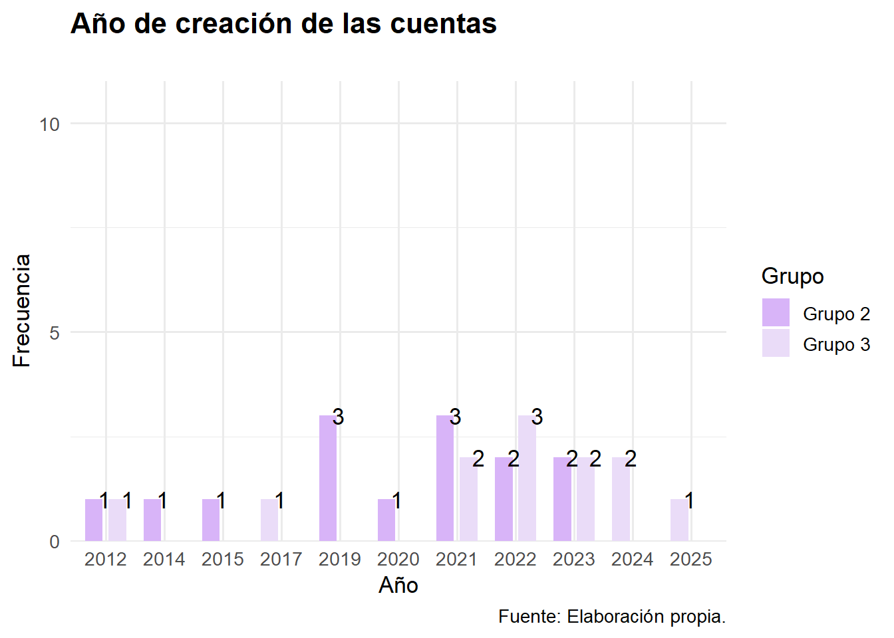
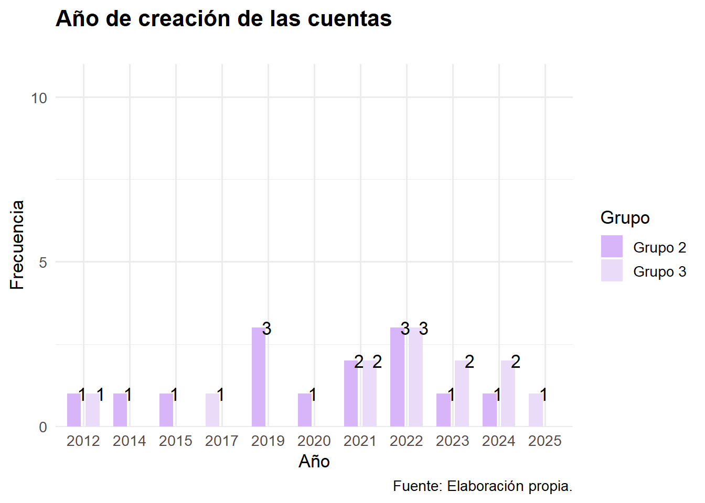

Original
| Variable | Mín | Q1 | Mdn | M | Moda | Q3 | Máx | DE |
|---|---|---|---|---|---|---|---|---|
| seguidores | 1089 | 4924 | 14200 | 49025.08 | 403000 | 39100 | 403000 | 93780.56 |
| cantidad_de_publiaciones | 50 | 188 | 356 | 636.16 | 2664 | 988 | 2664 | 644.70 |
| Nota. Elaboración propia. |
| Variable | Mín | Q1 | Mdn | M | Moda | Q3 | Máx | DE |
|---|---|---|---|---|---|---|---|---|
| seguidores | 2007 | 5106.5 | 5915.5 | 36109.08 | 160000 | 41475.00 | 160000 | 54066.24 |
| cantidad_de_publiaciones | 60 | 267.5 | 397.5 | 890.67 | 2760 | 1127.75 | 2760 | 951.66 |
| Nota. Elaboración propia. |
| grupo | tipo | Total | |
|---|---|---|---|
| Activismo | Ambos | ||
| Grupo 2 | 3 12 % |
22 88 % |
25 100 % |
| Grupo 3 | 5 41.7 % |
7 58.3 % |
12 100 % |
| Total | 8 21.6 % |
29 78.4 % |
37 100 % |
| χ2=2.642 · df=1 · φ=0.337 · Fisher's p=0.083 | |||
Opción A
Considerando que el grupo 2 tiene:
- 25 cuentas en total,
- un rango (50 - 2.664) de publiaciones similar al grupo 3 (60 - 2.760),
- pero mayor cantidad de seguidores (max: 403.000; media: 49.025; Q3: 39.100)
Se propone filtrar el grupo 2 a partir de 10.000 seguidores.
Resultando la siguiente distribución:
| grupo | tipo | Total | |
|---|---|---|---|
| Activismo | Ambos | ||
| Grupo 2 | 1 7.1 % |
13 92.9 % |
14 100 % |
| Grupo 3 | 5 41.7 % |
7 58.3 % |
12 100 % |
| Total | 6 23.1 % |
20 76.9 % |
26 100 % |
| χ2=2.612 · df=1 · φ=0.408 · Fisher's p=0.065 | |||

Opción B
Considerando que con el filtro anterior se pierden dos cuentas de tipo “Activismo” para el grupo 2.
Se propone que el filtro se amplíe a partir de 20.000 seguidores, dando como resultado 11 cuentas de tipo “Ambos”. A esa muestra, se agregan las 3 cuentas de tipo “Activismo” para mantener la cantidad de 14 cuentas para ese grupo.
Resultando la siguiente distribución:
| grupo | tipo | Total | |
|---|---|---|---|
| Activismo | Ambos | ||
| Grupo 2 | 3 21.4 % |
11 78.6 % |
14 100 % |
| Grupo 3 | 5 41.7 % |
7 58.3 % |
12 100 % |
| Total | 8 30.8 % |
18 69.2 % |
26 100 % |
| χ2=0.474 · df=1 · φ=0.219 · Fisher's p=0.401 | |||
